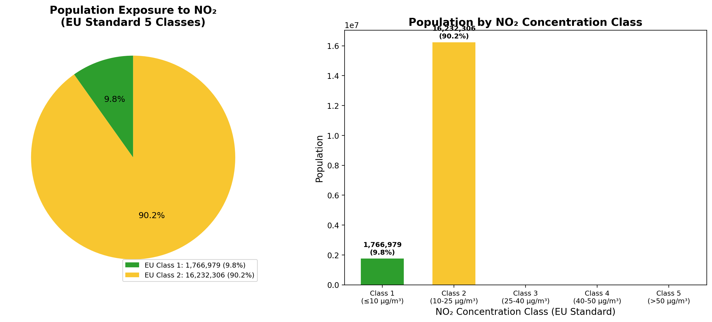
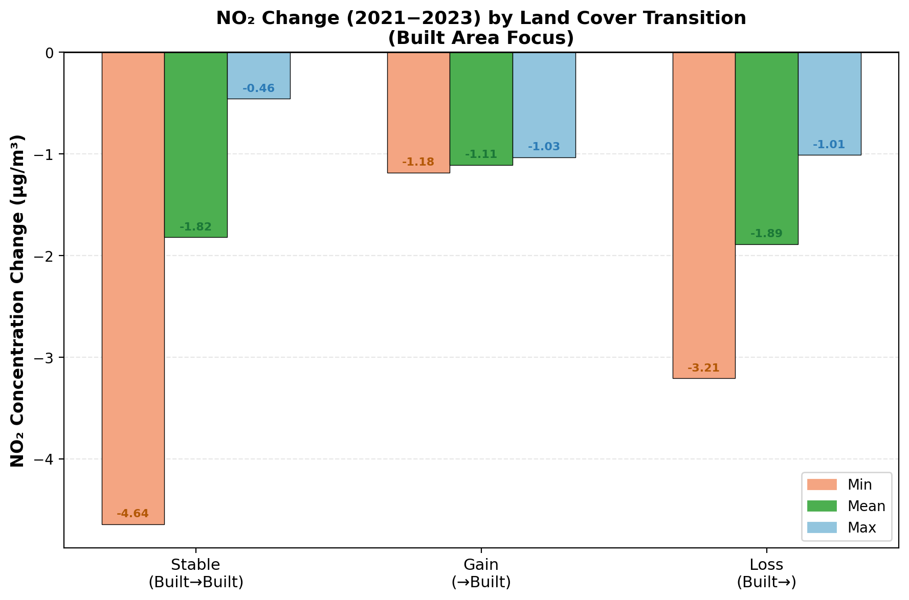

Overview of all GIS lab results: pollutant concentration maps, population exposure, land cover change analysis, and correlation statistics.


| Province | Pop Class | Pol Class | Bivariate |
|---|---|---|---|
| Loading... | |||
| EU Class | Population | % |
|---|
Built area change detection using ESA WorldCover 10m data.
Based on LCC contingency matrix for Built Area (Class 7). LCC code format: (2021_class × 100) + 2023_class.
| Indicator | Value (%) | Category |
|---|---|---|
| Stability (Persistence) | 95.74% | N/A (Baseline) |
| Primary Source of Gain | 63.77% | Class 5 → Built Area (507) |
| 2nd Source of Gain | 20.57% | Class 2 → Built Area (207) |
| 3rd Source of Gain | 9.87% | Class 11 → Built Area (1107) |
| Primary Destination of Loss | 63.78% | Built Area → Class 5 (705) |
| 2nd Destination of Loss | 14.10% | Built Area → Class 11 (711) |
| 3rd Destination of Loss | 12.42% | Built Area → Class 2 (702) |
| LCC Code | Transition | Pixels | Mean (μg/m³) | Min | Max |
|---|---|---|---|---|---|
| Loading... | |||||
LCC = (2021_class × 100) + 2023_class. All AMAC values negative = NO₂ decreased across Netherlands 2021→2023. Built Area = Class 7.